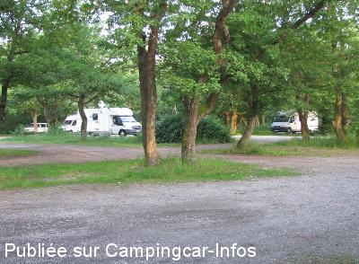

ASN = Aire de services avec stationnement nuit possible de :
UNGERSHEIM
(N° 855)
Accès/adresse :
Grosswald
Parking de l'Ecomusée
68190 UNGERSHEIM
Parking de l'Ecomusée
68190 UNGERSHEIM
Latitude : (Nord) 47.85179° Décimaux ou 47° 51′ 6′′
Longitude : (Est) 7.28587° Décimaux ou 7° 17′ 9′′
Tarif : 2015
Nuitée : 6 €
A payer à la réception de l'hôtel
Services gratuits
Type de borne : Plateforme
Services :


Autres informations :
Les vidanges des K7 sont à effectuer avec prudence
Le 03/06/2015 par

Le 19/08/2013 par Alain
Le 25/05/2013 par chamois38
Le 29/08/2007 par E S V M L B
Le 27/08/2005 par Jipé
de
Pascal
le 01/08/2015 :
Passage fin juillet 2015. Photos toujours d'actualité. Aire toujours calme. Ombre abondante et appréciée en cette vague de canicule. Tarif toujours de 6€ à régler à la réception de l'hôtel ou à la personne faisant le tour du parking le soir.
Et les cigognes font bien plusieurs fois par soir le tour des camping cars pour quémander de la nourriture !
Attention à ne pas se faire coincer en journée par les très nombreuses voitures qui préfèrent se garer sous les arbres plutôt que le parking goudronné officiel.
Passage fin juillet 2015. Photos toujours d'actualité. Aire toujours calme. Ombre abondante et appréciée en cette vague de canicule. Tarif toujours de 6€ à régler à la réception de l'hôtel ou à la personne faisant le tour du parking le soir.
Et les cigognes font bien plusieurs fois par soir le tour des camping cars pour quémander de la nourriture !
Attention à ne pas se faire coincer en journée par les très nombreuses voitures qui préfèrent se garer sous les arbres plutôt que le parking goudronné officiel.
de
Fletcher (Béatrice)
le 03/06/2015 :
Aire très agréable avec de très nombreuses places.. Idéalement située pour débuter une visite de l'Alsace.
Prix toujours 6€ la nuit.
Aire très agréable avec de très nombreuses places.. Idéalement située pour débuter une visite de l'Alsace.
Prix toujours 6€ la nuit.
de
Paul Guntz
le 03/04/2015 :
Bonjour,
La borne de service était HS lors de notre passage du 29.03.15
Bonjour,
La borne de service était HS lors de notre passage du 29.03.15
de
francis Van Damme
le 14/08/2014 :
De passage fin juillet, tarif toujours de 6€.
Endroit très calme et ombragé vidange et eau gratuit.
Sympa de voir des cigognes venir a quelques mètres du CC
De passage fin juillet, tarif toujours de 6€.
Endroit très calme et ombragé vidange et eau gratuit.
Sympa de voir des cigognes venir a quelques mètres du CC
de
david
le 24/10/2013 :
de passage une nuit mi-octobre 2013 je confirme posts précédents, aire agréable et calme.
de passage une nuit mi-octobre 2013 je confirme posts précédents, aire agréable et calme.
de
hymer584
le 11/08/2013 :
§ Nous nous y sommes arrêtés le 3 Août et avons passé une fin de soirée et une nuit très tranquilles. Une personne passe dans la soirée pour encaisser les 6 euros correspondant au tarif de la nuitée. Les services, eux, sont toujours gratuits.
§ Nous nous y sommes arrêtés le 3 Août et avons passé une fin de soirée et une nuit très tranquilles. Une personne passe dans la soirée pour encaisser les 6 euros correspondant au tarif de la nuitée. Les services, eux, sont toujours gratuits.
de
chamois38
le 25/05/2013 :
§ Toujours aussi agréable comme halte et service gratuit,tarif 2013 pour un stationnement nocturne est passé à 6€,mais gratuit en journée,un très beau site à visiter et un charmant accueille ...
§ Toujours aussi agréable comme halte et service gratuit,tarif 2013 pour un stationnement nocturne est passé à 6€,mais gratuit en journée,un très beau site à visiter et un charmant accueille ...
de
Alain
le 07/08/2011 :
elle reste l'aire centrale de la visite de l'Alsace
eau et vidange très pratique
parking sur bitume ou sous les arbres suivant la météo
collecte alléatoire
elle reste l'aire centrale de la visite de l'Alsace
eau et vidange très pratique
parking sur bitume ou sous les arbres suivant la météo
collecte alléatoire
de
Félix
le 10/07/2011 :
Nous y sommes passés il y 2 semaines. Il n'y a pas d'indications claires pour le stationnement des CC. D'abord garé sous les arbres, on s'est déplacé pour le nuit sur le parking voitures asphalté, n'ayant pas confiance dans le sol sous les arbres car c'était le déluge. Nous avions fini notre visite juste à temps pour ne pas être trempés. Il n'y a pas eu de collecte, sans doute à cause de ce même déluge.
Nous y sommes passés il y 2 semaines. Il n'y a pas d'indications claires pour le stationnement des CC. D'abord garé sous les arbres, on s'est déplacé pour le nuit sur le parking voitures asphalté, n'ayant pas confiance dans le sol sous les arbres car c'était le déluge. Nous avions fini notre visite juste à temps pour ne pas être trempés. Il n'y a pas eu de collecte, sans doute à cause de ce même déluge.
de
.jolaroulotte
le 15/06/2009 :
Bonjour. Y étant passé voila 15 jours, parking très calme pour la visite de l'Ecomusée. La vidange des K 7 n'est pas spécialement appropriée. Merci quand même à ce parc de nous accueillir tout simplement.
Bonjour. Y étant passé voila 15 jours, parking très calme pour la visite de l'Ecomusée. La vidange des K 7 n'est pas spécialement appropriée. Merci quand même à ce parc de nous accueillir tout simplement.
de
LESAINT regis
le 10/05/2007 :
Effectivement 5,50€, c'est un peu cher, mais quel calme. Nous y avons passé 2 nuits dans le calme et le repos total. La visite de l'écomusée est toujours très interessante même quand on l'a déja faite.
Effectivement 5,50€, c'est un peu cher, mais quel calme. Nous y avons passé 2 nuits dans le calme et le repos total. La visite de l'écomusée est toujours très interessante même quand on l'a déja faite.
de
Alain
le 27/04/2007 :
A visiter absolument l'écomusée, c'est super. Le parking bien pour la journée, mais je pense que 5,50 € pour passer la nuit est un peu cher.
A visiter absolument l'écomusée, c'est super. Le parking bien pour la journée, mais je pense que 5,50 € pour passer la nuit est un peu cher.
de
Monique et Christian MONTAGNON
le 12/09/2006 :
Aire très bien, calme, visite écomusée à recommander, mais la mine ne se visite pas hors saison. Cependant, l'odeur de la potasse présente par forte chaleur gène un peu.
Aire très bien, calme, visite écomusée à recommander, mais la mine ne se visite pas hors saison. Cependant, l'odeur de la potasse présente par forte chaleur gène un peu.
de
Christophe
le 18/08/2006 :
A recommander! Visite chouette et accueil très sympa!
A recommander! Visite chouette et accueil très sympa!